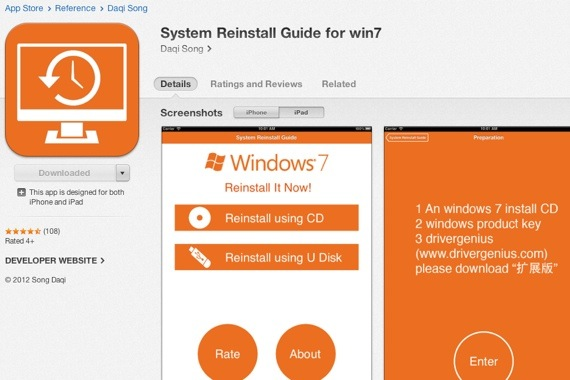
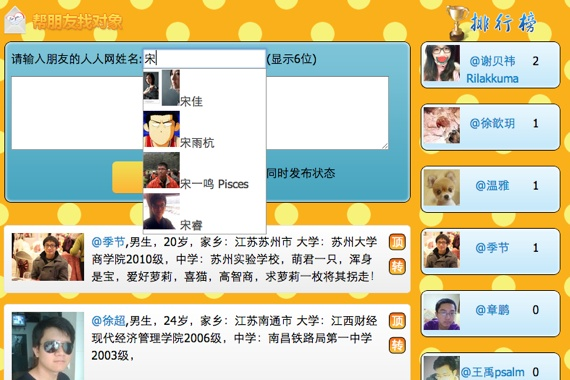
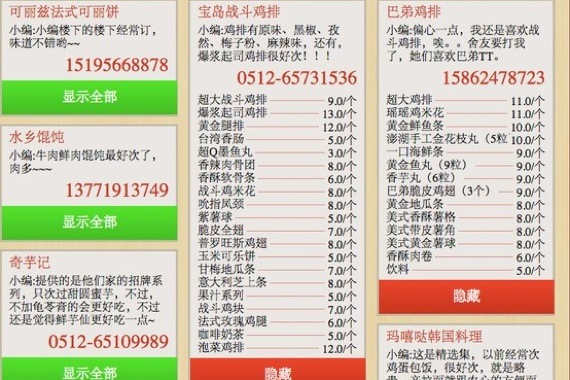
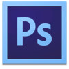
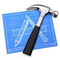
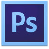
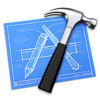

自我评价
热爱编程，设计，摄影等一切有助于实现自己想法的技能。 商学背景让我更为关注用户体验，深刻理解“Don't make me think”的理念，十分注重网站的可用性与可访问性。十分勤奋的懒人，愿意花很多时间研究一些能提高工作效率的方法与技术，十分认同DRY理念。
开发经验
擅长编写符合W3C标准的，可维护的，低耦合的Web页面，对各浏览器特性有一定的了解。目前正专注学习javascript以及一些流行库，十分喜欢css3与html5带来的新特性。
有一定的产品能力，自己做过一些小项目，负责市场调研，撰写商业策划，建立产品原型，设计开发产品，市场营销，客户关系管理等全方位的工作，从而大致了解了整个产品流程。有着较为丰富的后端经验和一定的设计能力，能高效地与产品经理，后端开发人员，设计师交流合作。
熟练使用Mac/Linux,十分喜欢Ruby On Rails并从Rails社区中学到了很多WEB开发的最佳实践，并能熟练使用Git进行版本控制。经过一段时间的开发实践与对开发的思考，慢慢接受了 BDD（行为驱动开发）的理念，并逐渐尝试采用BDD主导开发。
英语能力
TOEFL(82),CET-6(487),有着较好的英文阅读交流能力，乐于阅读英文原版书籍，博客，文档等一手资料，热爱公开课与美剧。
技能
-
语言
- HTML(5)
- CSS(3)
- Javascript
- Ruby
- PHP
- SQL
- Objective-C
- Java
-
方法论
- W3C标准
- 语义化
- 表现与结构分离
- 响应式设计
- 渐进增强
- MVC
-
框架
- Rails
- jQuery
- Backbone.js
- Bootstrap
- ThinkPHP
- Cocoa Touch
-
技术
- Chrome Web Developer Tools
- CoffeeScript
- SCSS/LESS
- Compass
- Git
- AJAX
- Emmet
- Jasmine
作品
-
电脑重装指南(iOS)

考虑到许多同学都不会重装电脑，网上的资料也比较陈旧，对电脑小白有一定的门槛，我便亲自录制重装视频，设计编写APP，并成功提交到App Store上供大家下载。该APP是我入门Objective-c开发的习作，用户遍布全球40多个国家，累计用户超6万人，并获得了近2000元的收 入。通过对Objective-c的系统学习，我的英语水平有了较大的提升，并初步了解了Cocoa Touch框架。 App Store下载链接
-
苏大微博
当时校内微博较热门，我便在项目管理课上提出了建立苏大微博的想法，并在大一暑假之前完成了苏大微博的设计制作，作为我们的暑期社会实践项目。我在团队中主要负责海报传单设计制作，全站设计与前端代码编写与ppt视频制作。在这个过程中，我对前端开发有了初步的了解。
-
谁更萌
初学编程与php时使用ELO算法做的一个图片对比程序，使用ThinkPHP框架制作。已开源，开源程序被下载近千次，数次接到客户的定制请求。并由此成为SAE高级开发者，从这个项目开始，我对Web开发产生了浓厚的兴趣。 开源发布页 源码下载
-
帮好友找对象

根据当时热点“帮舍友找对象”制作的人人网应用，使用ThinkPHP框架制作。初次接触到了AJAX开发，在项目开发过程中对前端开发有了进一步的了解，也了解到了兼容浏览器的一些方法与Hack。 人人应用页
-
失物招领微信平台
为解决失物招领问题，尝试用php与微信开放平台做了一个产品原型，被多家媒体报道，用户普遍比较希望类似的平台出现，但微信平台API限制较多，无法很 好满足用户需求。后期准备使用Backbone.js+Rails设计编写整套失物招领程序，同时推出iOS客户端。 tech2ipo报道链接
-
苏大外卖

为解决外卖单管理困难的问题，我开发了此网站。这是我第一次使用Rails开发的小型项目。在开发的过程中用到了瀑布流等技术，同时也对Rails的开发与部署有了进一步的了解。
常用软件
 



十分感谢您能看到这儿！！如果您希望获得我的完整简历，请简要填写您的联系方式与所在公司等信息，我会尽快将完整简历发送到您的邮箱中，谢谢！